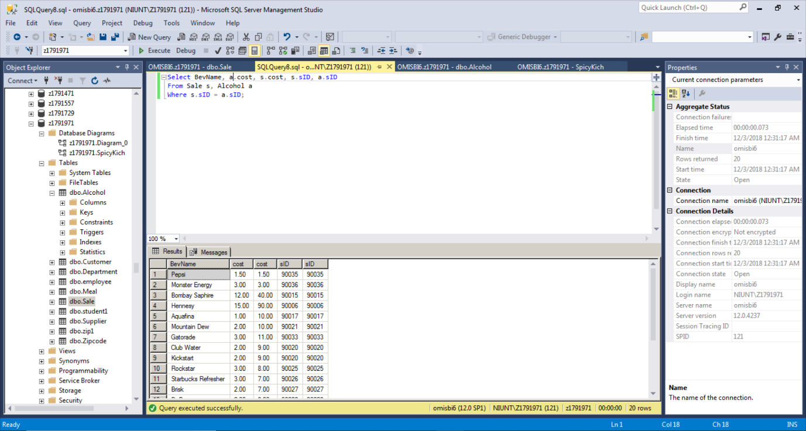

SQL Project
In my SQL database project I was responsible for creating tables and queries representing
the relationships within the fictional company Spicy Kitchen. My partner did the same
for me, however, I gave him the responsibility of creating a database for a CVS Pharmacy which
was a company that already existed.

What Did I Learn?
- Data Manipulation
- Primary Keys
- Data Mining
- Manage Large Pools of Data